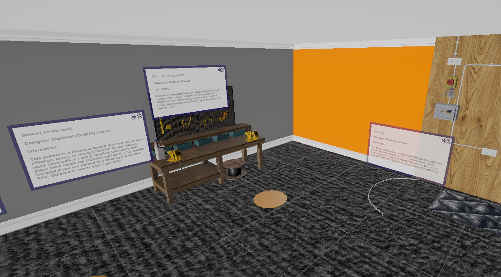

Scenario 1: Hazard Identification
Learners explore a virtual workshop and identify safety hazards.
- Interactive environment scanning
- Contextual explanations upon selection
- Educational feedback on risks and mitigation
- Designed to improve environmental awareness
Learning Impact: Encourages attention to detail and proactive hazard recognition.
